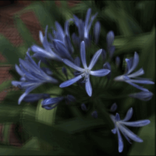
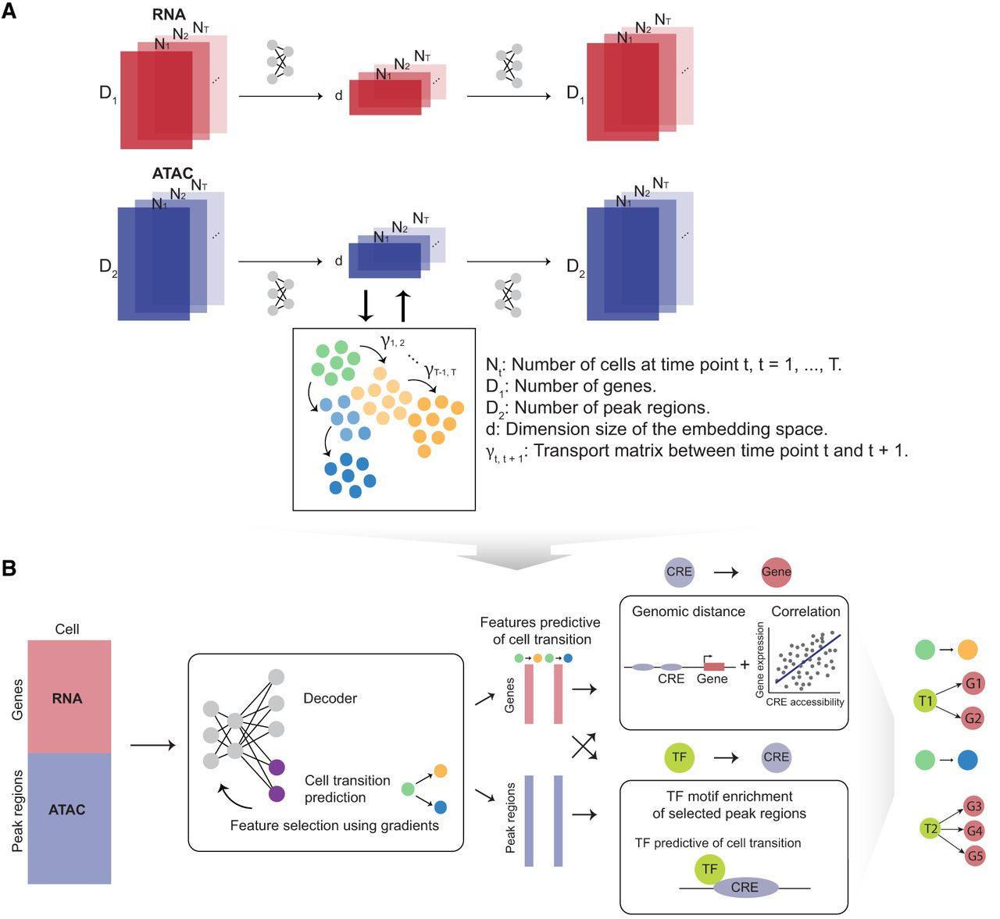

|
Brian Chao I'm a 3rd year PhD student at Stanford University working in the Stanford Computational Imaging Lab, advised by Prof. Gordon Wetzstein. I'm grateful to be supported by the NSF GRFP and the Stanford Graduate Fellowship. My research focuses on the integration of physics and ML techniques (neural rendering, generative models, etc) for novel imaging and display system design to enable new capabilities in AR/VR and scene reconstruction. I've interned at Meta Reality Labs, where I worked on neural rendering for 3D reconstruction. I've also served as a reviewer for SIGGRAPH, NeuRIPS, ISMAR, TIP, ICIP, and ICASSP. Email / CV / Google Scholar / Twitter / Github |

|
Research |
|
|
Gaussian Wave Splatting for Computer Generated Holography
Suyeon Choi*, Brian Chao*, Jackie Yang, Manu Gopakumar, Gordon Wetzstein SIGGRAPH, 2025 When state-of-the-art neural rendering meets next-generation holographic displays: converting optimized Gaussian splats to holograms that support natural focus cues. |
|
|
Textured Gaussians for Enhanced 3D Scene Appearance Modeling
Brian Chao, Hung-Yu Tseng, Lorenzo Porzi, Chen Gao, Tuotuo Li, Qinbo Li, Ayush Saraf, Jia-Bin Huang, Johannes Kopf, Gordon Wetzstein, Changil Kim CVPR, 2025 Augmenting Gaussians with RGBA texture maps greatly improves novel-view synthesis quality in 3D Gaussian Splatting. |

|
Large Étendue 3D Holographic Display with Content-adaptive Dynamic Fourier Modulation
Brian Chao, Manu Gopakumar, Suyeon Choi, Liang Shi, Jonghyun Kim, Gordon Wetzstein SIGGRAPH Asia, 2024 The novel combination of a multisource laser array and a dynamic Fourier amplitude modulator significantly improves holographic display étendue and light field hologram image quality. |
|
|
Full-colour 3D Holographic Augmented-Reality Displays with Metasurface Waveguides
Manu Gopakumar*, Gun-Yeal Lee*, Suyeon Choi, Brian Chao, Yifan Peng, Jonghyun Kim, Gordon Wetzstein Nature, 2024 A near-eye display design that pairs inverse-designed metasurface waveguides with AI-driven holographic displays to enable full-colour 3D augmented reality from a compact glasses-like form factor. |
|
|
Holographic Parallax
Seong-Woo Nam, Dongyeon Kim, Suyeon Choi, Juhyun Lee, Siwoo Lee, Manu Gopakumar, Brian Chao, Gordon Wetzstein, Yoonchan Jeong SIGGRAPH Emerging Technologies, 2024 The inclusion of parallax cues in CGH rendering plays a crucial role in enhancing perceptual realism, and we show this through a live demonstration of 4D light field holograms. |

|
Neural Holographic Displays for Virtual Reality
Brian Chao*, Suyeon Choi*, Manu Gopakumar*, Gun-Yeal Lee, Jonghyun Kim, Gordon Wetzstein SIGGRAPH Emerging Technologies, 2023 Live demonstration of state-of-the-art image quality, full-color, 3D, holographic VR near-eye displays that supports natural accommodation. |
|
|
High Brightness Holographic Projection
Brian Chao, Manu Gopakumar, Suyeon Choi, Gordon Wetzstein Optics Letters, 2023 A novel light-efficiency loss function, AI-driven CGH techniques, and camera-in-the-loop calibration greatly improves holographic projector brightness and image quality. |
|

|
Time-Division Multiplexing Light Field Display With Learned Coded Aperture
Brian Chao*, Chang-Le Liu*, Homer H. Chen IEEE Transactions on Image Processing, 2022 Using coded apertures and a learning-based light field display optimization pipeline to reproduce correct defocus blurs for better accommodation cues. |

|
Robust Light Field Synthesis From Stereo Images With Left-Right Geometric Consistency
Brian Chao, Chang-Le Liu, Homer H. Chen IEEE International Conference on Image Processing (ICIP), 2021 Leveraging geoemtric consistency in stereo images to synthesize high-quality light fields. |
|
|
Self-Supervised Deep Learning for Fisheye Image Rectification
Brian Chao*, Pin-Lun Hsu*, Hung-yi Lee, Y.C. Frank Wang IEEE Internation Conference on Acoustics, Speech, and Signal Processing (ICASSP), 2020 We propose an image-to-image translation algorithm based on generative adversarial networks that rectifies fisheye images without the need of paired training data. |
|

|
scTIE: data integration and inference of gene regulation using single-cell temporal multimodal data
Yingxin Lin, Tung-Yu Wu, Xi Chen, Sheng Wan, Brian Chao, Jingxue Xin, Jean Y.H. Yang, Wing H. Wong Y.X. Rachel Wang, Genome Research, 2023 Using optimal transport to infer regulatory relationships predictive of cellular state changes in single-cell temporal and multimodal data. |
Industry Experiences |
|
|
Research Scientist Intern
Meta Reality Labs, Display Systems Research (DSR)
June 2025 -
Will be working with Grace Kuo on computational displays. |
|
|
Research Scientist Intern
Meta Reality Labs, XR Hyperreal
June 2024 - January 2025
Worked on neural rendering for 3D reconstruction (Textured Gaussians, CVPR 2025), with Changil Kim, Hung-Yu Tseng, Jia-Bin Huang, and Johannes Kopf. |
|
Website source code from here. |